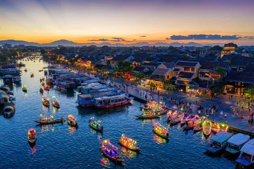
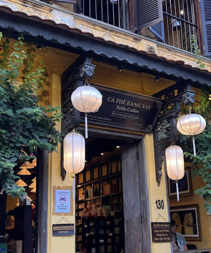

Nguồn: Mia.vn
Nguồn: Mia.vn
Cảnh đẹp - Phố lồng đèn & nhà cổ Hội An
Phố cổ Hội An & lồng đèn rực rỡ: Hội An là “thành phố của ngàn ánh đèn” với những chiếc lồng đèn nhiều màu lung linh treo khắp các ngõ phố - đặc biệt đẹp nhất vào buổi tối và trong dịp Lễ hội đèn lồng hàng tháng. Bước vào khu Phố Cổ, bạn sẽ thấy những ngôi nhà cổ vàng hoài cổ, mái ngói rêu phong và những chiếc đèn lồng đủ sắc màu phản chiếu trên mặt sông Thu Bồn tạo nên một khung cảnh vừa lãng mạn vừa đầy văn hoá.
 Nguồn: vuadacsan.org
Nguồn: vuadacsan.org
Món ngon - Cao lầu & món đặc sản Hội An
Cao lầu - tinh hoa ẩm thực Hội An: Một trong những món ăn nổi tiếng nhất ở Hội An chính là cao lầu, sợi mì vàng mềm pha trộn với nước dùng đậm đà, thịt xắt lát và rau sống tươi - tất cả tạo nên hương vị độc đáo chỉ có ở đây. Ngoài ra, bạn cũng nên thử bánh mì Hội An thơm giòn, cơm gà xé phay và bánh bao “white rose”, là những món đặc sản mang đậm dấu ấn Trung - Nhật -Việt của vùng.

Nguồn: getyourguide.comHoạt động - Thả hoa đăng, đi thuyền & trải nghiệm văn hoá
- Một hoạt động không thể bỏ lỡ khi đến Hội An là thả hoa đăng lên sông Hoài - bạn có thể mua một chiếc hoa đăng nhỏ, thắp nến và ước nguyện trước khi thả nó lấp lánh trong dòng nước, tạo nên cảnh tượng lãng mạn không thể quên.
- Ngoài ra, du khách còn có thể:
+ Đi thuyền trên sông Hoài ngắm phố cổ phản chiếu ánh đèn.
+ Tham gia làm đèn lồng thủ công hay thử chèo thuyền thúng trong rừng dừa Cẩm Thanh để trải nghiệm cuộc sống miền sông nước thực thụ.

Nguồn: halotravel.vnĐiểm check-in mới 2026 - Quán cà phê “hot” để sống ảo
-Faifo Coffee - Rooftop ulti-check-in: Một trong những quán cà phê nổi bật nhất ở Hội An 2026 là Faifo Coffee với view sân thượng bao trọn toàn cảnh phố cổ — đặc biệt lúc hoàng hôn và ánh đèn bật lên vào buổi tối, tạo nên khung cảnh đẹp như tranh để sống ảo.
-Một vài quán khác cũng đáng ghé:
+ Moments Hội An - không gian vintage cùng giàn hoa giấy rực rỡ.
+ The DeckHouse An Bang Beach - cafe view biển chill cực kỳ thư giãn.
+ Rosie's Cafe - brunch & không gian xanh mát cho ngày dài khám phá